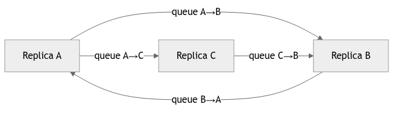
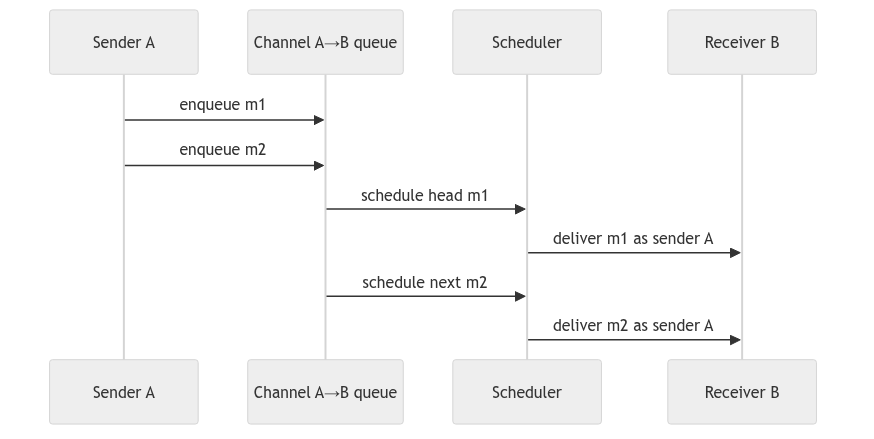
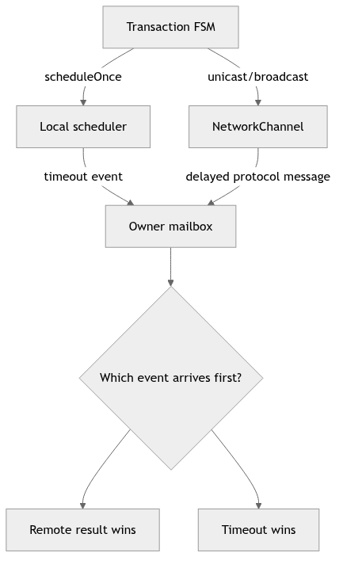
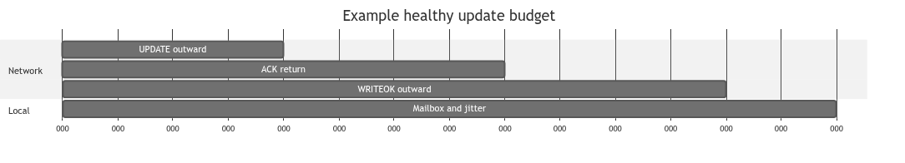
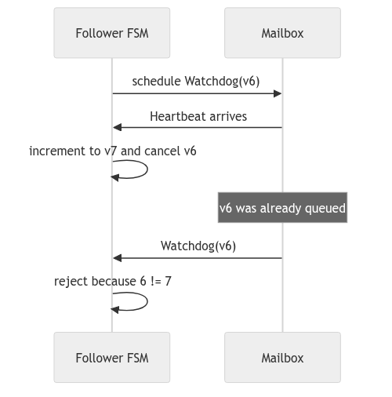
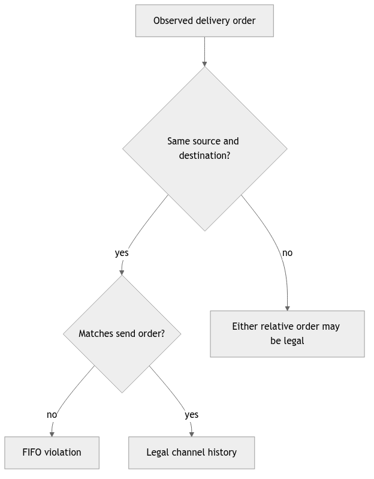

Learning goal. Learn which messages represent network traffic, which messages are local timer events, what FIFO really guarantees, and how those facts determine timeout design.
Snapshot: feature/electionTransaction at d1222a2.
Key files: AbstractReplica.java, NetworkChannel.java, Replica.java, DistributedActor.java.
The code has two importantly different delivery paths.
Protocol network path: a replica calls broadcast or unicast, which calls inherited AbstractReplica.tell. That method sends through a NetworkChannel actor, introducing configured latency while preserving FIFO order.
Local path: an actor sends to itself or uses scheduleToItself. The message enters the same actor’s mailbox without passing through the simulated network.
These paths must not be confused. A heartbeat sent from the coordinator to followers is network traffic. A HeartbeatTickMsg telling the coordinator that it is time to send a heartbeat is a local scheduler event.
NetworkChannel ownsEach replica lazily creates one NetworkChannel for each destination. Because the channel is a child of the sending replica, the effective identity is:
(source replica, destination replica)
The channel owns:
ActorRef;(message, originalSender) pairs; andWhen a message arrives, onEnqueue places it at the tail. If no delivery is active, the channel schedules a private Deliver message to itself. onDeliver removes the head, sends it to the real destination using the saved sender, and schedules the next delivery if the queue is non-empty.
Only one queued message is scheduled at a time. That is what prevents a later random delay from overtaking an earlier message on the same channel.
FIFO means:
If replica A sends message
m1and thenm2to replica B through the same channel, B receivesm1beforem2.
It does not mean:
Example:
A -> B: UPDATE U1
A -> B: WRITEOK U1 guaranteed in this order
C -> B: ELECTION E may arrive before, between, or after them
B -> B: timeout T may also be interleaved by the mailbox
This is why IDs, states, and stale-timeout checks are still necessary even with FIFO channels.
Without special handling, B would see the channel actor as getSender(). NetworkChannel therefore saves the original sender and calls:
destination.tell(message, originalSender)
Protocol message classes also contain an explicit sender field. The system therefore has two sender concepts:
tell;Msg.The implementation often uses explicit metadata because scheduled messages and forwarded transactions need stable, serializable correlation. A detailed code review should still check that the two identities cannot contradict each other in a security- or correctness-relevant way.
Replica.broadcast(msg) excludes the sender by default. This has an important consequence: a coordinator cannot rely on broadcasting UPDATE to count itself. The update FSM must represent the coordinator’s local participation directly, normally by starting with ACK count one and applying locally when the quorum is reached.
Replica.unicast also returns without sending when the target is getSelf(). This prevents pointless network emulation but means any algorithm that logically sends to itself needs an explicit local path.
Both helpers stop sending once crash state is CRASHED.
NetworkChannel.scheduleNextDelivery computes:
minLatency + random.nextInt(maxLatency - minLatency)
The generated values range from minLatency through maxLatency - 1. It requires maxLatency > minLatency; equal bounds would make nextInt(0) invalid. This is an implementation constraint worth recording even though normal test constants satisfy it.
DistributedActor.scheduleToItself(delay, msg) asks Akka’s scheduler to enqueue msg later. The scheduler does not call transaction code directly and does not interrupt the actor.
This preserves actor encapsulation:
timer expires
-> timeout message enters owner's mailbox
-> owner dispatches it by TransactionId
-> transaction checks its current state/version
The delay is only the earliest intended enqueue time. Mailbox backlog and runtime scheduling can make processing later.
Calling Cancellable.cancel() helps if the timeout has not been enqueued. It cannot pull a timeout message back out after it entered the mailbox.
Heartbeat demonstrates the safe pattern:
4 != currentVersion.Cancellation saves work; version/state validation provides correctness.
The same reasoning should be applied to election forwarding attempts and any update timeout that can be replaced.
A safe timeout must exceed the longest valid path it is monitoring, including network hops and scheduling tolerance.
Examples:
NetworkChannel in the same way as replica traffic.AbstractReplica.getMaxLatencyPlusTolerance adds a replica-count-dependent allowance. HeartbeatTransaction uses three missed heartbeat intervals plus that tolerance. These are implementation assumptions that should be justified against configured bounds rather than memorized as magic constants.
Reliable channels do not make a crashed destination reply. A queued message can still be delivered to its actor, but a correctly simulated crashed Replica ignores it. The sender then learns only through timeout.
Similarly, a replica may crash during a broadcast loop. updateCrashStatusCallback runs after sending activity, so a deterministic crash category can stop later protocol work. The exact point at which the crash counter changes is part of the fault model and belongs in the crash report.
TestDispatcher checks transaction-ID routing behavior. TestHeartbeatTransaction checks periodic heartbeat broadcast and routing of heartbeat ticks. Election tests inspect timeout metadata and ring navigation. These are useful component checks, but they do not prove every cross-channel ordering or every timeout budget.
If asked why NetworkChannel exists when Akka already sends messages, answer: it makes the course’s network model visible—controlled random latency and FIFO order per source/destination pair—so tests can exercise distributed timing rather than zero-delay local actor delivery.
The invariant to remember is: all replica-to-replica protocol traffic must use the simulated channel, while scheduler events remain local and must be validated when processed.
Replica A NetworkChannel Replica B | tell(msg) | | |------------------------------->| enqueue(A,B,msg) | | | choose delay d | | | scheduler(d) | | |----------------------------->| deliver | | sender appears as A same A -> B queue: m1, m2, m3 guarantee: delivery(m1) happens before delivery(m2) before delivery(m3)
FIFO is scoped to one ordered pair. If A sends m1 and C sends m2 to B,
the channel may deliver either one first. This is why a protocol must put
ordering information in its messages instead of assuming that “the first
message I observe is the oldest update globally.”
The channel normally does three conceptually separate operations: append to the source/destination queue, calculate a delay, and schedule a delivery callback. A scheduler timeout in a transaction does not pass through this queue. It is a local event, so its timestamp says nothing about when a remote message was sent.
Conceptual channel logic: q = queues.get(key(sender, target)) q.add(Envelope(sender, target, message)) // FIFO insertion d = randomDelay() scheduleOnce(d, deliverNext(key)) At delivery, preserve the original sender: target.tell(envelope.message(), envelope.sender())
The final line matters: a follower should not accept a heartbeat or ACK merely
because it arrived through a trusted channel; it should also verify the sender
encoded by the envelope. When inspecting the real implementation, identify
where ActorRef.noSender() is used and where the original sender is preserved.
A lost sender can make every participant look like the coordinator.
Let L be the maximum one-hop network delay and H the heartbeat period. A
follower that resets its watchdog after each heartbeat should use a timeout
strictly larger than H + L (usually with a safety margin). A two-hop quorum
round needs roughly 2L network budget, plus scheduler and processing slack.
These are not proofs of liveness, but they expose obviously impossible
constants. If a timeout is smaller than one configured hop, healthy nodes will
spuriously start elections.

Model the network as a matrix of directed queues. A→B and B→A are
different channels, as are A→B and C→B. FIFO says messages leave one cell
of that matrix in insertion order. It says nothing about which cell delivers
next. This mental model makes cross-sender interleavings obvious and prevents
the mistaken claim that one receiver mailbox sees a global send order.
For every protocol assumption, write its scope. Reliable means the simulated
channel eventually delivers unless the receiver’s crash behavior ignores it.
FIFO means same source and destination. Random delay means a scheduled arrival,
not packet loss. Sender preservation means the receiver can validate who
originated the message even though the channel performed the physical tell.

The safe implementation pattern schedules only the head of a directed queue.
When delivery completes, it removes that envelope and schedules the next.
Scheduling every message independently with a random delay could let m2’s
shorter delay overtake m1, violating FIFO. When reading NetworkChannel, find
the data structure that represents this responsibility handoff.
Sender identity is part of the envelope. If delivery uses the channel actor as
the sender, a participant cannot distinguish the coordinator from a follower.
If it uses noSender, sender validation becomes impossible. A channel wrapper
must therefore preserve the logical sender when it finally calls the target.

The mailbox is the meeting point of independent time sources. A timeout and a network result may be queued close together; wall-clock timestamps do not decide correctness. The FSM state and generation decide which event still has authority. Whichever terminal event is processed first clears the active transaction; the later one becomes stale.
Cancellation cannot retract an event already queued in the mailbox. This is
why heartbeat uses watchdogVersion, and why other retry timers benefit from
attempt IDs. Treat the timer payload like any remote message: validate it when
consumed.

Let the maximum configured one-hop delay be L. An UPDATE/ACK round trip needs
about 2L, while a final WRITEOK adds another L before a remote participant
applies. Processing, scheduler jitter, and test-probe delivery need additional
margin. This gives a reasoned lower bound; it is not a promise that the JVM
always schedules exactly at that instant.
For heartbeat, the bound includes heartbeat period plus delivery delay. A watchdog shorter than that sum creates false suspicions in a healthy execution. A watchdog many times larger preserves safety but slows liveness. Report both trade-offs instead of presenting a constant without its units or derivation.

This race is deterministic enough to test. Construct the older expiry message, process a valid heartbeat that advances the version, and then inject the old message. The absence of an election callback is the important assertion. A test that only checks cancellation returns successfully does not exercise the queued-event problem.
The same pattern applies to election neighbor retries: a timeout for attempt 2
must not invalidate an ACK for attempt 3. Name generations according to their
scope (watchdogVersion, attempt) rather than using one global counter with
ambiguous meaning.

For each trace, mark channel keys rather than actor names alone. Then decide whether an ordering is illegal. Create a trace where A sends m1 then m2 to B, while C sends x to B. Legal deliveries include m1,x,m2 and x,m1,m2; m2 before m1 is illegal. Repeat with A sending m1 to B and m2 to C: either delivery may occur first because the destination changed.
Finish by designing three tests: FIFO under contrasting random delays, sender preservation, and stale local timer rejection. Explain what each test proves and what it does not prove about total-order broadcast.
An asynchronous execution is better understood as a set of ordering
constraints than as one perfect timeline. If actor A sends m1 and then m2
directly to actor B, the sender-receiver rule constrains B to enqueue them in
that order when both are delivered. If actor C also sends x to B, the model
does not decide whether x appears before, between, or after A’s messages.
These constraints form a partial order: some pairs are ordered and others
are concurrent. A protocol creates stronger order only by exchanging more
information, such as sequence numbers, acknowledgements, or commit messages.
The project’s NetworkChannel makes this model visible. One channel actor owns
a queue for a fixed source-destination stream. It schedules delivery for the
head, delivers that item, and only then schedules the next head. Random delay
therefore changes when the stream advances without allowing its second item to
overtake the first. Separate channel actors schedule independently, which is
why their streams may interleave at the destination.
Akka associates every envelope with an immediate sender. The channel is an
intermediary, but NetworkChannel saves the original sender and passes it to
destination.tell. This matters because protocol handlers use sender identity
for ACK validation, coordinator validation, and replies. If the channel sent
with itself as sender, a follower could acknowledge the channel rather than
the coordinator, and an election FSM could not identify the ring neighbor that
responded.
The project also stores a sender inside Msg. That field is protocol data,
while Akka’s envelope sender is delivery metadata. Keeping them consistent is
an invariant worth testing. A malicious or malformed message could claim one
sender in its payload while arriving from another envelope sender. Even in a
course simulation, code should be clear about which identity is authoritative
for each decision.
Suppose R0 sends update u to R2 while R1 sends update v to R2. FIFO says
nothing about the relative order of u and v, because they came from
different senders. Worse, R3 may observe the opposite interleaving. Total-order
broadcast therefore cannot be obtained by saying “Akka mailboxes are FIFO.”
The coordinator must assign comparable EpochPairs, and participants must
validate and materialize updates according to that shared order.
This is a reusable distributed-systems lesson: transport order is scoped to a channel; protocol order is scoped to a logical operation or log. Whenever a review claims “message A must arrive first,” write the sender, destination, and path for both messages. If any of those differ, demand another causal link.
scheduleToItself asks the Akka scheduler to enqueue a message in the future.
The scheduler does not pause a handler at exactly the deadline and jump into
timeout code. The timeout waits behind anything already in the mailbox and is
handled as an ordinary later turn. Conversely, a result and a timeout may both
become queued close together. Whichever terminal event the FSM accepts first
must make the other harmless.
This explains the generation pattern. Calling Cancellable.cancel() is a
resource optimization, but cancellation cannot undo a task that has already
started or a message already enqueued. A timeout carries the generation for
the attempt that created it. The handler compares that value with current
state before producing a side effect. Correctness is decided at consumption
time, using the actor’s current knowledge.
For a one-way heartbeat, a follower watchdog must exceed the largest healthy gap between observed heartbeats. That gap includes the coordinator’s send period, the maximum configured channel delay, scheduler granularity, mailbox backlog, and a deliberate margin. For a request-response exchange, include both outward and return delay plus the remote processing interval. For a multi-round protocol, count the longest legal critical path rather than one message hop.
Timeout design therefore couples liveness and accuracy. A very short timeout reacts quickly but may suspect healthy actors; a very long timeout preserves accuracy but delays recovery. The specification assumes accurate detection, so configured bounds must make false suspicion impossible in the simulated environment. Tests should run near the bound, not only with zero latency.
Akka’s official Message Delivery
Reliability
chapter defines at-most-once delivery and per-sender/receiver ordering,
including the fact that ordering is not transitive through an intermediary.
The official Classic
Scheduler
chapter explains scheduler precision and the limit of cancellation. Read those
guarantees beside NetworkChannel.java: the framework defines the base model,
while the channel actor adds the assignment’s controlled FIFO delay.